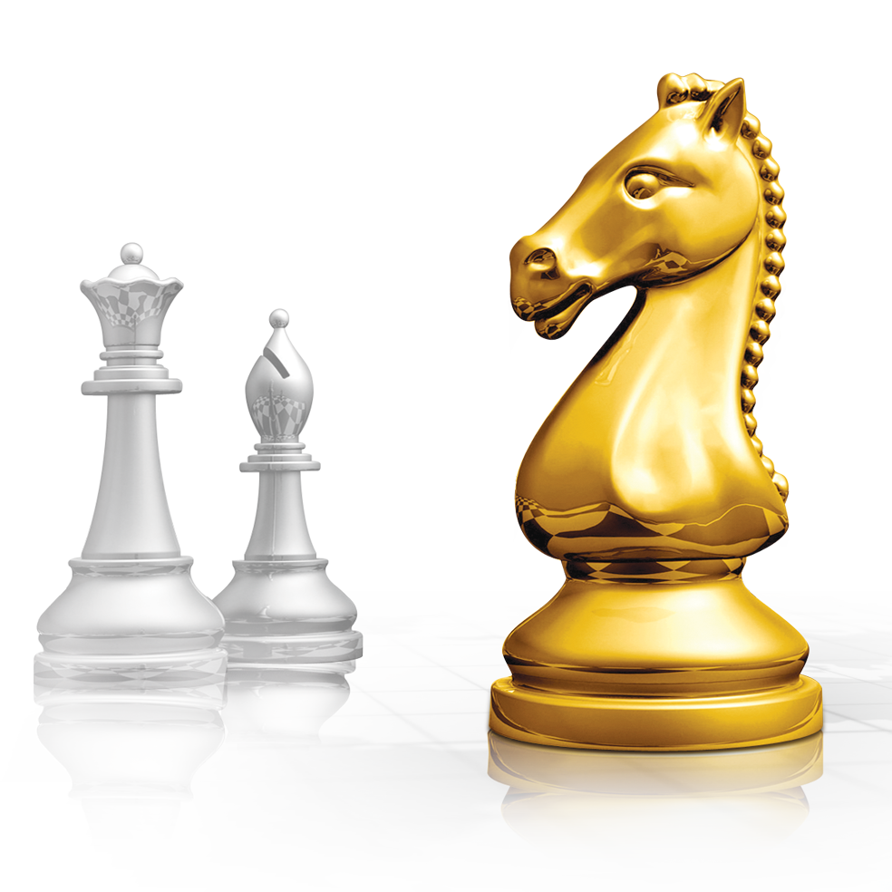

viswanathan anand
Viswanathan "Vishy" Anand (born 11 December 1969) is an Indian chess grandmaster and a former five-time World Chess Champion.

ju Wenjun
Ju Wenjun crowned with her fourth women's world champion.
Ju started learning to play chess at the age of seven.

Antoaneta Stefanova
Stefanova was born in Sofia, the capital of Bulgaria. When she was four years old, she received chess lessons from her father.

Susan Polgar
Susan Polgar (born April 19, 1969, as Polgár Zsuzsanna ) is a Hungarian-American chess grandmaster. Polgár was Women's World Chess Champion from 1996 to 1999.
Rules
The rules of chess ( also known as the laws of chess)
govern the play of the game of chess.
Chess is a two-player abstract strategy board game. Each player controls sixteen pieces of six types on a chessboard. Each type of piece moves in a distinct way. The object of the game is to checkmate the opponent's king; checkmate occurs when a king is threatened with capture and has no escape. A game can end in various ways besides checkmate: a player can resign, and there are several ways a game can end in a draw.
Characteristics of the game
Chess is played on a board of 64 squares arranged in eight vertical rows called files and eight horizontal rows called ranks. These squares alternate between two colours: one light, such as white, beige, or yellow; and the other dark, such as black or green. The board is set between the two opponents so that each player has a light-coloured square at the right-hand corner.
Moves
The board represents a battlefield in which two armies fight to capture each other’s king. A player’s army consists of 16 pieces that begin play on the two ranks closest to that player. There are six different types of pieces: king, rook, bishop, queen, knight, and pawn; the pieces are distinguished by appearance and by how they move. The players alternate moves, White going first.

King
White’s king begins the game on e1. Black’s king is opposite at e8. Each king can move one square in any direction; e.g., White’s king can move from e1 to d1, d2, e2, f2, or f1.
Bishop
Each player has two bishops, and they begin the game at c1 and f1 for White, c8 and f8 for Black. A bishop can move to any unobstructed square on the diagonal on which it is placed. Therefore, each player has one bishop that travels only on light-coloured squares and one bishop that travels only on dark-coloured squares.
Rook
Each player has two rooks (formerly also known as castles), which begin the game on the corner squares a1 and h1 for White, a8 and h8 for Black. A rook can move vertically or horizontally to any unobstructed square along the file or rank on which it is placed.
Queen
Each player has one queen, which combines the powers of the rook and bishop and is thus the most mobile and powerful piece. The White queen begins at d1, the Black queen at d8.
Knight
Each player has two knights, and they begin the game on the squares between their rooks and bishops—i.e., at b1 and g1 for White and b8 and g8 for Black.A knight at e4 could move to f2, g3, g5, f6, d6, c5, c3, or d2. The knight has the unique ability to jump over any other piece to reach its destination. It always moves to a square of a different colour.
Pawns
Each player has eight pawns, which begin the game on the second rank closest to each player; i.e., White’s pawns start at a2, b2, c2, and so on, while Black’s pawns start at a7, b7, c7, and so on. The pawns are unique in several ways. A pawn can move only forward; it can never retreat. It moves differently than it captures. A pawn moves to the square directly ahead of it but captures on the squares diagonally in front of it; e.g.,
CHESS STRATEGY
ONLINE
The 5 best places to play chess online
- Chess.com
- Lichess
- Internet Chess Club (ICC)
- Playchess.com
- FIDE Online Arena